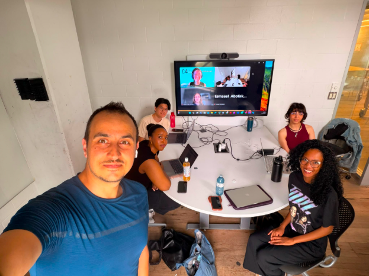

You(th) are here
The right information, in the right place, for every person who walks through the door.

Team Members
Goals & Outcomes
Team C2 set out to close an information gap faced by youth experiencing homelessness who may also experience cognitive, learning, developmental, mental health, or sensory disabilities. Youth arriving at drop-in or shelter spaces may not reliably receive clear information about what services exist within that space, what their rights are, or what other support services are available. This is because arriving at these locations may already be overwhelming, and limited resources currently available are often text-heavy, and not user-friendly. The team aimed to change that by designing accessible, semi-permanent information materials that people could use independently, without needing to ask staff or sort through complicated materials. The hoped-for outcome was a practical tool that staff could maintain, and adapt to their needs, while supporting youth autonomy whether requiring additional accessibility accommodations or not.The team successfully partnered with Youth Services Bureau (YSB) in Ottawa, ON to create a first prototype of an accessible information package.
Strategies & Processes
The team used a design thinking approach, moving through empathy mapping, problem definition, ideation, prototyping, partner validation and product iteration. A Five Whys analysis on Miro helped early on, pushing the team past surface-level symptoms to identify informational inaccessibility and heavy cognitive load as a root issue. Design iterations were built in Canva with its accessibility features, with the map created using Felt and Google Maps. Every major decision was tested against the Accessibility for Ontarians with Disabilities Act (AODA) standards, Ontario Regulation 191/11, and CharityComms’ accessible print guidelines. Partner feedback from YSB shaped the design at every stage — from the bilingual layout to the choice of a semi-permanent wall holder, along with potential for one-time handouts and digital access. Team member roles were divided by strength and interest: design-focused members led visual and UX work, research-oriented members handled evidence and feasibility, and strong communicators led partner presentations and collected live feedback.
Key Achievements
Team C2 produced a complete, partner-validated accessibility package made up of three connected pieces: a key information sheet for a wall-mounted display at the YSB Downtown Drop-In, a wayfinding map showing the location, nearby transit, and community resources, and a QR code linking to digital versions. The sheet uses plain language, clear icons, strong colour contrast, grouped sections, and bilingual (English/French) formatting. YSB confirmed the design’s feasibility — colour printing is accessible at their site, and staff can update and reprint the sheet themselves whenever services or contacts change. The project team also produced an SDG roadmap, an ethics statement, an interdisciplinary reflection, and a one-minute project video for Capstone Day.
Critical Evaluation
The project addresses a real and documented need with a practical, low-cost solution that YSB can actually maintain. Its strength is in its sustainability: no technical expertise is needed to keep it current, and the template can be adapted for other shelter sites without starting from scratch. The key limitation is that the design was never tested directly with people who have disabilities — the primary users — because doing so would have required formal ethics approval that was outside the course scope. Instead, the team relied on secondary research, partner input, and accessibility guidelines. The project also does not address the structural causes of homelessness; it makes the shelter system easier to navigate but does not create beds, fund services, or remove the deeper, systemic barriers people face.
Recommendations
The team’s main recommendation is to deploy the current version at YSB for use by Drop-in attendees. If possible, YSB could run a structured feedback process with frontline staff and, where ethics approval allows, with service users directly. Feedback could be used to iterate on the design. From there, the template could be adapted to their other sites, as well as could be expanded to be tailored for use by other community partners — BetterStreet and York University Community Safety were both identified as strong fits. The team also recommends expanding the language options beyond English and French to serve newcomer communities, developing a simple adaptation guide so other organizations can replicate the model, and pursuing Braille and screen-reader compatible versions in partnership with accessibility specialists.
Target SDG Goals
Starting Point
Team C2’s theme was homelessness and accessibility — a very broad starting point. After the first round of partner presentations in Week 1, the team was keen to identify ways to address potential causes of inaccessibility in shelter spaces. Initial ideas included designing physical aids, or addressing policy issues, which were unfortunately identified as too ambitious to fully execute on a short timeline. The team needed to narrow their focus, and sought support to do this in discussion with community partners.
Major Developments
The pivot came during the first partner presentation, when a representative from YSB directly flagged that their existing information sheets for their Drop-in centre were not working well, and were limited in their shelter spaces. That single piece of feedback reoriented the whole team. Rather than building something new from scratch, our team could redesign something that already existed and already had a partner willing to use it. By deciding to focus on addressing YSB’s direct need, the project scope was able to be clearly defined, with confirmation that it would have lasting impacts.
Challenges
The biggest challenge was letting go of the team’s early ambitions. Recognizing that ramps, websites, and GIS mapping tools were not feasible within two weeks required the team to sit with some disappointment before finding a better direction. A second challenge was designing for users the team could not directly consult — people experiencing homelessness with disabilities — without the formal ethics approval required to involve them. The team compensated with secondary research and partner feedback, but the absence of direct user input remained a real limitation. Coordinating a multidisciplinary team with different schedules and workloads also required consistent management attention, and some early communication gaps slowed momentum before the team found its rhythm.
Lessons Learned
The team would narrow their scope earlier. The weeks spent evaluating infeasible ideas cost time that could have gone into deeper design work and more partner conversations. They would also pursue ethics approval for user testing from the outset, so the design could be validated with the people it was actually built for rather than inferred from guidelines alone. More broadly, the team came away with a clear conviction that simple, maintainable solutions beat impressive ones that no one can sustain — and that the most important design question is whether the partner organization can actually carry the work forward after the project ends.
Future Direction + Continuation Feasibility
You(th) Are Here was designed explicitly as a starting point. The information sheet and map are prototypes built to be tested, refined, and adapted — not finished products to be filed away. The next step is deployment at YSB Downtown Drop-In, followed by real feedback from staff and eventually from service users. From there, the template can be adapted for other YSB locations and for partner organizations like BetterStreet, 360kids, and Trek for Teens, with each version customized to that site’s services and surrounding community. Continuation is highly feasible: the materials run on standard PDF software and a printer, staff can update them without design expertise, and YSB has already confirmed they are willing to use them.
Responsible Interest Holders
YSB is the primary partner and the natural owner of the next phase. Their frontline staff are both the implementers and the most important source of ongoing feedback. Beyond YSB, the community partners who engaged with Team C2 throughout the project — BetterStreet, 360kids, Trek for Teens, and York University Community Safety — are all realistic candidates to adapt the template for their own spaces. Future C4 student teams or community volunteers could take on the expansion work: additional languages, Braille versions, and the adaptation guide. For the longer-term accessibility testing work, partnerships with disability rights organizations and accessibility consultants would be needed.
Barriers
The most immediate barrier is staff capacity. Frontline shelter workers carry heavy workloads, and even a low-maintenance task like reprinting the information sheet can fall to the bottom of daily priorities without a clear owner and a routine built around it. The sector’s funding instability is also a real risk — if YSB faces resource cuts, the capacity to maintain and expand the project shrinks. Getting formal ethics approval for direct user testing is a meaningful administrative barrier that will take time. And without a structured handoff — design files, rationale documentation, partner contacts — a future team would need to rebuild institutional knowledge from scratch rather than build on what Team C2 created.